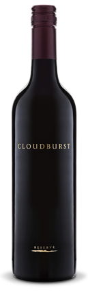

Spirit
Curiosity. Wine connects us with people and with the
Divine. It transmutes the moment. It lifts the spirit.
Everything is deeply interconnected. What we do in one part of the farm is reflected in another part. The farm is alive and responsive, especially in the soil.
We began our practice here by growing crops that increased soil fertility, fixed nitrogen and brought microorganisms and life into depleted soil. Soon the place was home to worms, bugs, frogs, mice, snakes, birds and the occasional kangaroo.
We began our practice here by growing crops that increased soil fertility, fixed nitrogen and brought microorganisms and life into depleted soil. Soon the place was home to worms, bugs, frogs, mice, snakes, birds and the occasional kangaroo.
We began our practice here by growing crops that increased soil fertility, fixed nitrogen and brought microorganisms and life into depleted soil. Soon the place was home to worms, bugs, frogs, mice, snakes, birds and the occasional kangaroo.

Curiosity. Wine connects us with people and with the Divine. It transmutes the moment. It lifts the spirit.
Earth
We planted grapes well suited to our ancient, untouched soils.
Our vineyard is near the Indian Ocean, cooled by breezes from Antarctica and nourished with pristine winter rains.
Southwest Australia is a biodiversity hotspot, an area that supports natural, largely intact ecosystems and where native species and communities are well represented. The area is blessed by a high diversity of locally endemic species rarely found outside the hotspot.
The cooling sea breeze of this maritime climate mitigates the warm daytime temperatures, allowing the grapes to gather flavor.
The vineyard is part of a greater whole. Our farm is diverse bush land connected to a protected national park, which runs down to the sea. Animals of all kinds live in or visit the vines; kangaroos, possums, mice, snakes, lizards, frogs, spiders, parrots, honey-eaters, songbirds, bees, wasps make their home there, or nearby. The vines are patrolled by resident guinea fowl. In practice, everything we do is in relationship with everything else.
We make decisions for the generations ahead.
Practice
Biodynamics is a way of looking at the whole farm as a living system, beginning with the all-important soil.
We use homeopathic preparations, fish and seaweed emulsions, composts, rock dusts and mulches to support the soil fertility and health.
A healthy soil retains moisture, is nutrient rich, and is alive in beneficial organisms, supporting vital plants. Our work is to insure the liveliness of the soil. Living soil contains billions of microorganisms in every handful. Specific microorganisms allow the roots to assimilate specific nutrients.
Everything is deeply interconnected. What we do in one part of the farm is reflected in another part. The farm is alive and responsive, especially in the soil.
We began our practice here by growing crops that increased soil fertility, fixed nitrogen and brought microorganisms and life into depleted soil. Soon the place was home to worms, bugs, frogs, mice, snakes, birds and the occasional kangaroo.
Own-rooted vines (not on rootstock) are a pure expression of that particular grape. We obtained cuttings of the finest specimens of each variety in our region and planted them. We do not water – we dry farm. We began by digging test pits in the driest part of summer and planted just above the moisture line. Having found their own water, the vines are self-sufficient.
We prune and trellis by hand. All vines are on vertical shoot-positioned trellises and are planted close together as is done in Burgundy. This forces the vines to compete for nutrients and gives them just the right amount of stress to bring out the flavor of the land. By hand means with care. No rush. Human element. Happy people. Short rows. Small scale. We get to know our vines.
We also pick by hand and cause minimal damage to the fruit during transportation to the winery and throughout processing. We utilize wild ferments and intervene as little as possible, allowing the grapes to fully express themselves as they transmute into wine. These practices of gentleness and care, of minimal invasion, of listening to what is called for and getting out of the way begin in the vineyard and are carried over into the winery.
I think of my job as an alchemist. It requires that I listen closely and that I do not compromise.
All of this can be tasted in our wine.